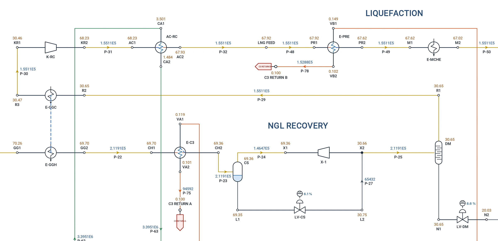

Case study
An LNG plant in one model
From the inlet facilities to the LNG tank, with its refrigeration, its fractionation and its cooling water: 105 elements, three fluids, the hydraulics and the phase equilibrium solved together.
From the inlet facilities to the LNG tank, with its refrigeration, its fractionation and its cooling water: 105 elements, three fluids, the hydraulics and the phase equilibrium solved together.

The whole plant on the Flowmax sheet, each line coloured by what it carries. Click to enlarge.
The well fluid is given by its composition and solved with Peng-Robinson; the propane refrigerant and the cooling water are fluids of their own in the same project. Every separator holds its level with a valve, so the flows split where the plant splits them.
A three-phase slug catcher splits the well fluid into gas, condensate and produced water, each level held by its own valve.
The CO2, the H2S and the water taken out of the gas by component, each drawn off through its level valve at its own pressure.
The condensate let down, heated to 140 °C and stabilised: the condensate cooled and sent out, the light ends to fuel gas.
Gas-gas exchange, propane chilling, a cold separator and a turboexpander that gives back 1.7 MW, then the recycle compressor.
Precooling and the main cryogenic exchanger, the Joule-Thomson valve and the end flash to the LNG tank.
The propane loop as its own fluid: compressor, condenser on cooling water, and two JT valves to the chillers.
Deethaniser, depropaniser and debutaniser to ethane, propane, butane and gasoline, each bottom held by its level valve.
The cooling water pump and the network to every condenser and cooler, as a third fluid in the same model.
The run takes about a minute on a laptop. Every number below is the program's, read from the solved model.
| Feed gas | 300.0 t/h | 70.6 barg, 50 °C |
| LNG to storage | 148.2 t/h | 0.15 barg, −160.4 °C |
| Ethane | 9.8 t/h | |
| Propane | 18.0 t/h | |
| Butane | 12.9 t/h | |
| Gasoline | 16.0 t/h | |
| Stabilised condensate | 39.6 t/h | 3 barg, 40 °C |
| Fuel gas | 17.9 t/h | HP 11.0, LP 6.9 |
| Acid gas | 22.9 t/h | 1.5 barg |
| Water | 14.6 t/h | produced 14.2, dehydration 0.3 |
| Total out | 300.0 t/h | the mass balance closes |
| Propane compressor K-C3 | 11.1 MW |
| Recycle compressor K-RC | 7.3 MW |
| Turboexpander X-1 | −1.7 MW (gives) |
| Cooling water pump P-CW | 1.0 MW, 7,345 t/h |
| Main cryogenic exchanger | 24.9 MW |
| Propane condenser | 26.4 MW |
Each separator, column and exchanger can be opened for its own results, and the heat and material balance sets any streams side by side, phase by phase, with the full composition.
Every node carries its pressure and its name, every line its mass flow and its name. Zoom on any unit and the plant reads like a drawing: here the NGL recovery and the start of the liquefaction, with the cold separator, the expander and the main cryogenic exchanger.

When the plant is solved, the documents come from the same model, in Excel and PDF, with your company's logo.
Any streams side by side: conditions, phases, mass, molar and standard flows, properties and composition.
Every line's process data, velocity, pressure drop per 100 m, ρv² and erosional velocity, checked against the sizing criteria.
Separators, compressors, pumps, exchangers and control valves with their duties and estimated design conditions.
Normal, rated, maximum and minimum cases, NPSH, Cv required to IEC 60534, ready for the vendor.
Turndown, a compressor out, a change of feed: each a case of the same model, run side by side.
A PDF with the network on its cover, the basis of the calculation and the tables of every element.
HP, MP and LP separation, flash gas compression and the export pumps, three phases at the inlet.
Inlet separation, compression, acid gas removal, glycol dehydration and dew point control.
Feedwater, deaerator, boiler, steam headers, letdowns and condensate return, on IAPWS-IF97.
Relief valves into a flare header: choked flow at the speed of sound, Mach and back pressure, every relief case a scenario.
Columns stage by stage, with a condenser and a reboiler, reflux and boil-up or product targets.
Wells to the CPF, two-phase flowlines and trunklines, gas export, hydrogen blends and CO2.
This plant is a worked example built by ProcessTool to show the method; its flows and conditions are illustrative.
Request a free trial with this LNG plant and the other gas and multiphase examples.